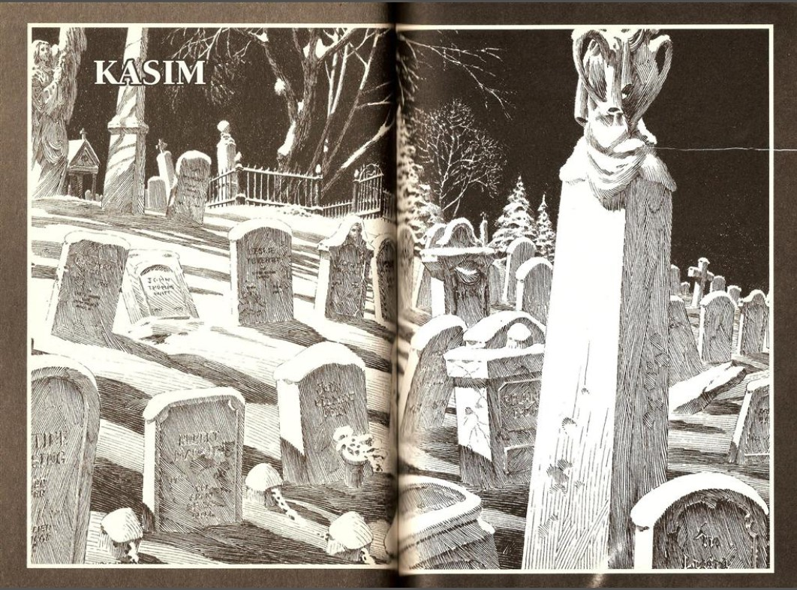
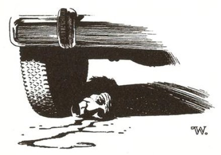
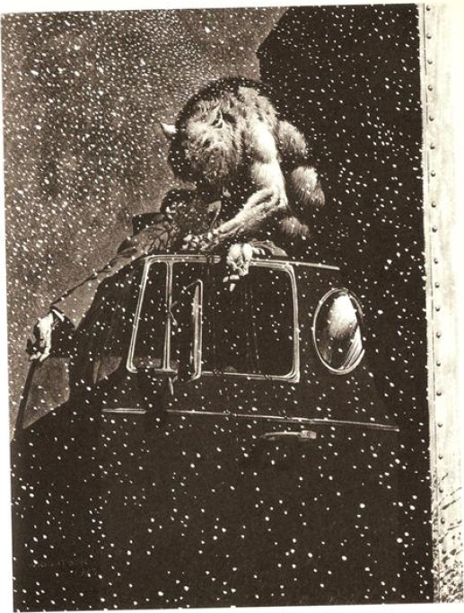

TIPKI BİR SİGARANIN izmariti gibi Kasım'ın karanlık merhametsizliği Tarker's Mills'in üzerine çökmüştü. Ana Cadde'nin üzerinde tuhaf bir hareketlenme görünüyordu. Peder Lowe bu hareketliliği Baptist Kilisesi'nin papaz evinden izliyordu, mektuplarını almak için dışarıya henüz çıkmıştı, bir Kanga8 sırasını andıran toz içindeki kamyonetlerin oluşturduğu - Ford'lar, Chevy'ler, International Harvester'lar - kuyruğun bir yılan gibi kasabadan uzaklaşmasını izlerken elinde altı genelge ve bir mektup tutuyordu.
(8.- Kanga : Latin Amerika'ya özgü bir dans. çn.)
Hava durumu spikeri karın geldiğini söylemekteydi, ama bunlar fırtına öncesinin alametleri değildi; henüz ortada daha sıcak bölgelerde olmak adına, av ceketinizi giyip silahınızı yanınıza alıp köpekleri kamyonetin arkasına atarak Florida ya da Kaliforniya'nın altın sahillerine gitmenizi gerektirecek bir durum yoktu. Elmer Zinneman'ın ve kardeşi Pete'in önderliğindeki grubun köpekleri, silahları ve bir sürü altılı bira paketiyle ortaya çıkışının dördüncü günüydü. Olay, dolunay yaklaştıkça yapılması moda olan geçici bir eğlence halini almıştı. Kuş sezonu geçmişti, geyik sezonu da. Ama kurtadam sezonu hâlâ açıktı ve bu gruptaki adamların büyük bölümü her şeyi yoluna koymaya kararlı merhametsiz maskelerinin altında aslında çok iyi vakit geçiriyorlardı. Koç Coslaw'ın da diyebileceği gibi, bu lanet olası bir gerçekti!
Bu adamlardan bazıları, Peder Lowe'un tanıdığı, gürültü yapıp eğlenmek dışında başka hiçbir şey yapmıyorlardı; bu durum onlar için ormanın derinliklerine girmek, biraları çekip dere yataklarına işemek, balıklar, kurbağalar ve zenciler hakkında şakalar yapıp sincaplara ve kargalara ateş etmek adına iyi bir fırsattı. Asıl hayvanlar bunlar, diye düşünüyordu Lowe, eli farkında olmadan, Temmuz'dan beri taktığı göz bandına giderken. Birileri birilerini vuracak gibi görünüyordu. Bu olay şimdiye kadar gerçekleşmediği için kendilerini şanslı saymalıydılar.
Arkalarında bağıran, havlayıp uluyan köpeklerle birlikte son kamyonetler de klaksonlarını çalarak Tarker's Tepesi'nin üzerinde görüntüden çıkıyorlardı. Evet, gerçekten de adamların bazıları gürültü ederek eğleniyorlardı ama bazıları - örneğin Elmer ve Pete Zinneman gibileri - ciddi olarak ölüm tehlikesi taşıyorlardı.
Eğer o yaratık, adam veya canavar ya da her neyse, bu ay avlanmaya çıkarsa köpekler onun kokusunu alacaktır, diye Elmer'in iki hafta önce berber dükkânında konuştuğunu duymuştu Peder Lowe. Ve eğer o şey - ya da o adam - dışarı çıkmazsa, o zaman biz de belki bir hayat kurtarmış oluruz. Ya da en azından birinin çiftlik hayvanlarını.
Evet, adamların arasında bu işi ciddiye alan birkaç kişi var - belki bir düzine, belki de iki. Ama Lowe'un aklının arkalarında bu yeni ve tuhaf duyguyu - köşeye sıkışmışlık duygusunu uyandıran onlar değildi.
Bu duygusunun asıl sebebi o mektuplardı. En uzunu iki cümleden oluşan, çocuksu bir şekilde emek vererek yazılmış ve bazen imla hataları barındıran o mektuplar. Bugün gelen ve üzerinde yine aynı çocuksu el yazısıyla Peder Lome, Baptist Papaz Evi, Tarker's Mills, Maine 04491 yazılmış mektuba bakıyordu.
Şimdi, bu tuhaf, tuzağa düşürülmüşlük duygusu ... köpeklerin kendisini bir şekilde çıkmaz bir sokağa sürüklediğini fark eden tilkinin de böyle hissedeceğini düşünüyordu peder. Tilkinin, dişlerini göstererek kendisini şüphesiz parçalara ayıracak olan köpeklerle savaşmak için döndüğü o panik anı.
Kapıyı sıkıca kapatıyor ve eskiden kalma duvar saatinin vakur tik taklarının duyulduğu oturma odasına giriyor; oturuyor ve Bayan Miller'in haftada iki kez cilaladığı masanın üzerine altı dini genelgeyi koymasının ardından yeni mektubunu açıyordu. Tıpkı diğerleri gibi bu mektupta da bir selamlama girişi yoktu. Tıpkı diğerleri gibi bu da kimse tarafından imzalanmamıştı. Bir ilkokullunun kullanabileceği çizgili bir defterden koparılmış yaprağın yaklaşık olarak ortasına şu cümle yazılmıştı:
Neden kendini öldürmüyorsun ?
Peder Lowe elini alnına koyuyor - eli hafifçe titremekte. Diğer eliyle kâğıt parçasını buruşturuyor ve masanın ortasındaki büyük cam küllüğe koyuyor (Peder Lowe tüm danışmanlık işlerini oturma odasında yapar ve kilise cemaatinin bazı sorunlu üyeleri de sigara içerlerdi). Cumartesi öğleden sonraları giydiği "ev" süveterinin cebinden bir kutu kibrit çıkarıp diğerlerini yaptığı gibi bu mektubu da yakıyor. Yanışını seyrediyor.
Lowe'un iki ayrı safhada geldiği bu duruma dair bildikleri şöyleydi: Mayıs'taki kâbusundan sonra, Eski Pazar Buluşmasındaki herkesin kurtadama dönüştüğünü gördüğü o rüyadan ve Clyde Corliss'in içi dışına çıkarılmış cesedini bulduğu o korkunç günden sonra fark etmeye başlamıştı ki. . . yani . . . kendisiyle ilgili bir şeyler yolunda gitmiyordu. Bunu başka türlü nasıl söyleyeceğini bilemiyor. Bir şeyler yolunda gitmiyordu. Ama aynı zamanda, genellikle dolunay dönemlerindeki bazı sabahlarda, kendini şaşılacak derecede iyi, şaşılacak derecede sağlıklı ve şaşılacak derecede güçlü hissettiğini de biliyordu. Bu duygu ayla beraber geriye çekiliyor ve bir sonraki ayla beraber yeniden büyüyordu.
Rüyasını ve Corliss'in ölümünü takip eden günlerde, o güne dek göz ardı edebildiği diğer şeylerin doğruluğunu da kabul etmek zorunda kalmıştı. Çamurlu ve parçalanmış giysiler. Sebebini bilemediği tırnak izleri ve çürükler (ama sıradan tırnak izleri ve çürükler gibi ağrıyıp sızlamadıkları için bunların . . . göz ardı edilmeleri çok kolay olmuştu). Bazen ellerinde ve . . . dudaklarında bulduğu kan lekelerini dahi göz ardı edebilmişti.
Sonra, Temmuz7un beşinde, ikinci safha başlamıştı. Basitçe açıklanırsa şöyleydi: Uyandığında bir gözü kördü. Kesikler ve tırnak izlerinde de olduğu gibi göz kaybının da hiçbir acısı yoktu; sadece eskiden sol gözünün olduğu yerde pıhtılaşmış kanla kaplı, korkunç bir oyuk vardı. Artık bu noktada anladıkları inkâr edilmek için çok fazlaydı: kurtadam kendisiydi; Canavar kendisiydi.
Son üç gündür tanıdık duygular içindeydi: ciddi bir yerinde duramama hali, neredeyse neşe dolu bir sabırsızlık ve vücudunda bir gerginlik hissi. İşte yine geliyordu - değişim neredeyse yeniden başlayacaktı. Bu gece dolunay yükselecek ve avcılar köpekleriyle dışarıda olacaklardı. Neyse, bu önemli değildi. Çünkü onların düşündüğünden daha akıllıydı. Bir insan-kurt'tan bahsediyorlar, ama onu sadece bir kurt olarak değerlendiriyorlardı, bir insan olarak değil. Onlar kendi kamyonetlerini kullanabiliyorlarsa, o da kendi küçük Volare'sini kullanabilirdi. Bu öğleden sonra Portland yolu boyunca arabasını sürüp kasabanın eteklerinde bir motelde kalmayı düşünüyordu. Eğer değişim gerçekleşirse, etrafta ne avcılar ne de köpekler olacaktı. Kendisini korkutan onlar değildi.
Neden kendini öldürmüyorsun?
Mektupların ilki bu ayın başında gelmişti. Basitçe şöyle diyordu:
Kim olduğunu biliyorum.
İkincisinde yazılansa şuydu:
Eğer sen bir Tanrı adamıysan bu kasabadan git.
İnsanlar yerine hayvanları öldüreceğin bir yere git.
Üçüncüyse şöyleydi:
Buna bir son ver.
Hepsi buydu; sadece Buna bir son ver. Ve şimdi de
Neden kendini öldürmüyorsun?
Çünkü istemiyorum, diye huysuz bir şekilde düşünüyor Peder Lowe. Bu şey - başıma gelen her neyse - benim talep ettiğim bir şey değildi. Ne bir kurt tarafından ısırılmıştım ne de bir çingene tarafından lanetlenmiştim. Bu sadece . . . oldu işte. Geçen Kasımın sonlarında bir gün, kilisenin giyinme odasındaki vazolara koymak için biraz çiçek toplamıştım. Sunshine Tepesi'ndeki küçük güzel mezarlığın yakınlarından. Daha önce hiç böyle çiçekler görmemiştim ... ben kasabaya dönene kadar solup gitmişlerdi. Her biri kararıp ölmüştü. Herhalde her şey o zaman başladı. Böyle olduğunu düşünmek için gerçekten hiçbir nedenim yok... ama böyle olduğunu düşünüyorum ve kendimi öldürmeyeceğim. Hayvan olan onlar, ben değilim.
Notları kim yazıyor?
Bunu bilmiyordu. Marty Coslaw’a yapılan saldırı Tarker’s Mills'in haftalık gazetesinde yazılmamıştı. Üstüne üstlük peder dedikodulara kulak vermemesiyle gurur duyan biriydi. Ayrıca, tıpkı Marty'nin, dini çemberleri kesişmediği için Cadılar Bayramı'na kadar Lowe hakkında hiçbir şey bilmeyişi gibi rahip de Marty hakkında hiçbir şey bilmiyor ve aylık döngüler sona erdiğinde kurtadamken yaptıklarına dair - o alkoliklere özgü kendini iyi hissetme halinden ve öncesindeki oluşan yerinde duramama güdüsünden başka -hiçbir şey hatırlamıyordu.
Ben bir Tanrı adamıyım, diye düşünüyordu, yerinden kalkıp yavaş adımlarla gezinmeye ve adımlarını eski duvar saatinin vakur tik taklarının duyulduğu sessiz oturma odasında hızlandırmaya başlarken. Ben bir Tanrı adamıyım ve kendimi öldürmeyeceğim. Ben burada iyilik yapıyorum ve bazen kötülük yapıyorsam, ki benden önceki insanlar da kötülükler yapmışlardı; kötülük de Tanrı'ya hizmet eder ya da Eyüb'ün Kitabı'nda bize böyle söylendi; eğer Dışardan bir yerden lanetlendiysem Tanrı beni Kendi zamanına getirecektir. Her şey Tanrı'ya hizmet eder... peki o kim? Bunu araştırmalı mıyım? Dört Temmuz günü kim saldırıya uğramış? Ben (o) gözümü (gözünü) nasıl kaybettim (kaybetti)? Belki de o, susturulmalı . . . ama bu ay değil, ilk önce köpeklerini kulübelerine koymalarını sağlayalım. Evet...
Peder, giderek daha da hızlı bir biçimde yürümeye başlamıştı, öne doğru eğilmiş olarak yürüyordu ve sakalının da farkında değildi, genellikle seyrek çıkardı (sadece üç günde bir tıraş olarak idare edebilirdi... ve artık tıraş zamanı gelmişti, hepsi bu), şimdi yüzünden sakalları kalın, pasaklı ve tel tel fışkırıyordu, bu gecenin sonuna doğru zümrüt yeşiline dönüşecek olan kahverengi gözünün elalaşmaya başladığının da farkında değildi. Odanın içinde hızla gezinmesini sürdürürken kamburlaşıyor ve kendi kendine konuşmaya başlıyordu . . . ama sözcükleri giderek kısılıyor ve daha çok bir homurtuya dönüşüyordu.
Sonunda, gri Kasım öğleden sonrası örs rengi bir alacakaranlığa bağlanırken, mutfağa doğru fırlıyordu, kapının yanındaki askıdan Volare'sinin anahtarlarını kaptı ve arabasına doğru neredeyse koşarak gitti. Portland'a doğru hızla sürdü, gülümsüyordu ve mevsimin ilk karı, demir gökyüzünün dansçıları, uzunların önünden aşağıya süzülmeye başladığında bile yavaşlamayacaktı. Ayın bulutların üstünde bir yerlerde olduğunu hissediyordu; onun gücünü hissediyordu; göğsü beyaz gömleğinin dikişlerini zorlayarak genişliyordu.
Radyodan Rock'n'Roll çalan bir istasyonu buldu, kendisini tam anlamıyla ... harika hissediyordu!
O gecenin daha geç saatlerinde oluşacak olan şeyler Tanrı'nın takdiri olabilirdi ya da ay ışığının aydınlattığı gecelerde insanların, güvenli taş surların içinde tapındıkları o eski tanrıların bir jesti - ah, bu çok komikti, gerçekten, çok komik, çünkü Lowe Canavara dönüşmek için ta Portland'a kadar gitmişti ve o karlı açık Kasım gecesi parçaladığı adam Milt Sturmfuller, tüm yaşamı boyunca Tarker’s Mills'de yaşamış biriydi... ve belki de her şeyin ötesinde Tanrı'nın adil olduğu düşünülebilirdi, çünkü eğer Tarker's Mills'de birinci sınıf bir bok varsa, o da Milt Sturmfuller'di. Tıpkı diğer gecelerde yaptığı gibi hırpalanmış karısı Donna Lee'ye mesaiye kaldığını söyleyip buraya gelmişti, ama mesaisi aslında
Rita Tennison adında bir fahişeydi ve evli oldukları bunca yıl boyunca tek bir erkeğe bile bakmamış olan Donna Lee'ye, Rita'yla geçirdiği tatlı bir gecenin ardından kendisine bulaşan uçuğu çoktan geçirmişti bile.
Peder Lowe, Portland-Westbrook sınırı yakınlarında Driftwood isimli bir motelde yer ayırtmıştı ve o motel, Milt Sturmfuller ile Rita Tennison'un bu Kasım gecesinde işlerini yapmak için seçtikleri moteldi.
Milt, arabasında bıraktığı bir burbon şişesini alıp getirmek için saat onu çeyrek geçe dışarı çıktı ve tek gözlü Canavar karla örtülmüş, on tekerlekli bir Peterbilt tırının tepesinden üzerine atladığında ve sıkı bir vuruşla kafasını koparıp attığında, aslında adam dolunay gecesini Tarker's Mills'den uzakta geçirmekte olduğu için kendisini tebrik ediyordu. Milt Sturmfuller'in hayatında son olarak duyduğu ses, kurtadamın yükselen zafer hırıltısıydı; kafası Peterbilt'in altına yuvarlanmıştı, gözleri açılmış bir şekilde bakıyordu, boynundan etrafa kan fışkırmaktaydı ve Canavar burnunu adamın boynuna gömüp beslenmeye başlarken titreyen elindeki burbon şişesi yere düşüyordu.
Bir sonraki gün, Tarker's Mills'deki Baptist Kilisesi'nin papaz odasında kendini tamamen . . . harika hissederken Peder Lowe, gazetede cinayet haberini okuyacak ve dindarca şunları düşünecekti: O iyi bir adam değildi. Her şey Tanrı'ya hizmet eder.
Ve bunun ardından da düşünmeye şöyle devam ediyordu: Mektupları gönderen çocuk kim? Temmuz ayındaki kurban kim olacaktı? Artık bunu bulmanın zamanı geldi. Biraz dedikodu dinlemenin zamanı geldi.
Peder Lowe göz bandım düzeltiyor, gazetenin yeni bir sayfasını çevirmesinin ardından düşünüyordu: Her şey Tanrı'ya hizmet eder, eğer bu Tanrının isteğiyse, onu bulacağım. Ve onu susturacağım. Sonsuza dek.

